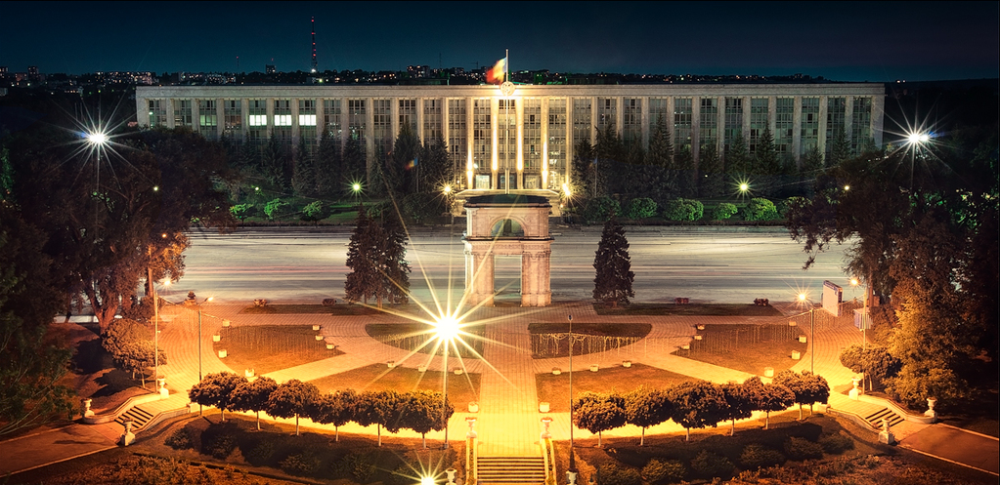

5 motive ca să alegi o vacanță în Republica Moldova!
Republica Moldova este locul unde poti trai o vacanta de vis. Cand ne facem planurile de vacanta, ne imaginam plaje intinse cu apa cristalina, taverne, mancare gustoasa si voie buna. Nu ai cum sa regreti daca alegi sa iti petreci vacanta oriunde in Grecia.Are parcuri imense, străzi cu arbori și grădini înflorite, mai ales în centrul orașului unde sunt concentrate atracțiile turistice. Dacă vă pomeniți în oraș duminică, neapărat să mergeți la slujbă ca să intrați în contact cu spiritualitatea profundă a poporului moldav. Veți observa că toate femeile au capul acoperit în semn de devotament. Dacă nu aveți o batistă o puteți procura la un preț mic, la Piața Centrală, care se află în locul pieței de kolhoz din epoca sovietică. Aici găsiți legume, fructe și produse care ajung proaspete în fiecare zi din sate.
Pe lângă tururile pe la beciuri și vinării, Maria Casella recomandă lecții de culinărie, și anume gătirea plăcintelor. Plăcintele sunt o specialitate ce nu lipsește niciodată de pe masa moldovenilor.
Nu puteți spune că ați fost în Moldova dacă nu ați ajuns la Orheiul Vechi. E un complex istoric, natural, care a inspirat timp de secole artiștii și poeții. Are tot ce trebuie ca să fie înscris în patrimoniul Unesco.
Degustarea bucatelor tradiționale moldovenești o să-ți lase o satisfactie nemaipomenită, iar bucătăria moldovenească, tipic rurală, cu influențe balcanice, otomane, ruseși ucrainene, va fi o surpriză plăcută pentru toți.
Vizitează și sătucului Butuceni, apoi localitatea Palanca. Trebuie să vizitați satul Palanca, pierdut printre coline și păduri, în inima Moldovei, unde oamenii încă se mai deplasează cu căruțele trase de cai și păstrează tradițiile agricole, pastorale. Tatiana Popa a deschis ușa casei sale părintești pentru vizitatori, casă transformată în muzeul artizanatului rural moldovenesc. Asta, după ce părinții au trecut prin experiența deportării în Siberia.